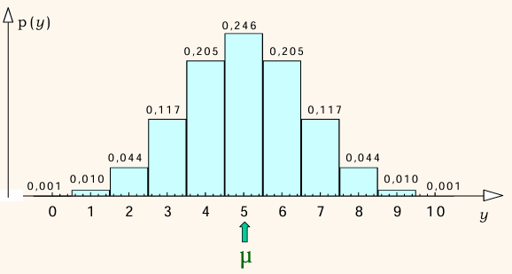
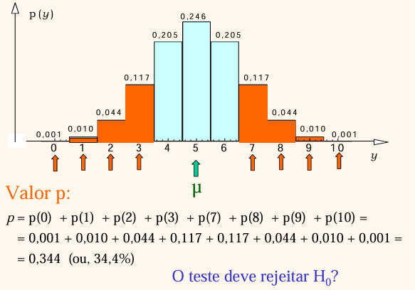
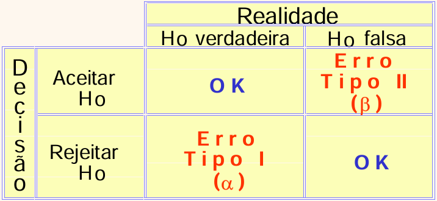

Teste de Hipóteses: Teste z e Teste t de Student
Introdução
Este material cobre as Semanas 9 e 10 do plano de ensino: conceitos fundamentais de teste de hipóteses, teste para a média populacional (teste \(z\) com variância conhecida ou \(n>30\); teste \(t\) de Student com variância desconhecida e \(n\) até 30), teste \(t\) para amostras pareadas, teste \(z\)/\(t\) para amostras independentes, e análise contextualizada de artigo científico.
Slides originais disponíveis AQUI.
Alguns materiais desta seção são adaptados de Pedro A. Barbetta, Estatística Aplicada às Ciências Sociais, 6ª ed., Editora da UFSC, 2006.
Testes de Hipótese: Conceitos Fundamentais
A lógica geral de um teste de hipótese segue o mesmo ciclo já visto nas semanas anteriores — população, amostra, amostragem — acrescido de uma etapa de decisão: partimos de uma população sobre a qual temos uma hipótese que queremos colocar à prova; coletamos uma amostra, cujos dados servirão de base para aceitar ou rejeitar essa hipótese; e, a partir da amostragem, chegamos à decisão do teste estatístico.
Hipótese nula e hipótese alternativa
Todo teste de hipótese contrapõe duas afirmações sobre a população:
- Hipótese nula (\(H_0\)): a afirmação “padrão” ou de “não-efeito”, que assumimos verdadeira até que haja evidência suficiente para rejeitá-la.
- Hipótese alternativa (\(H_1\)): a afirmação que estamos, de fato, interessados em sustentar com os dados.
Exemplos aplicados:
- Problema: Em uma região em estudo, a propensão de fumar nos homens é diferente da das mulheres? \(H_0\): a proporção de homens fumantes é igual à de mulheres fumantes, na população em estudo. \(H_1\): essas proporções são diferentes.
- Problema: Um agrônomo deseja saber se uma nova cultivar de soja (Cultivar B) produz mais que a cultivar tradicional (Cultivar A). \(H_0\): a produtividade entre os dois cultivares é igual, na população em estudo. \(H_1\): a produtividade entre os dois cultivares é diferente.
- Problema: um pesquisador quer saber se o pH médio de uma amostra de solo em um talhão é diferente de 6,0 (por exemplo, encontrou uma média amostral de 6,3). \(H_0\): o pH médio populacional do talhão é igual a 6,0. \(H_1\): o pH médio é diferente de 6,0.
Exemplo de referência: a moeda desequilibrada
Para fixar a lógica do teste de hipótese de forma bem concreta, considere o exemplo clássico da moeda: suspeita-se que uma moeda não seja perfeitamente equilibrada (probabilidade de cara \(\neq\) probabilidade de coroa \(\neq 0{,}5\)). Definindo o parâmetro \(\pi\) = probabilidade de cara:
\[ H_0: \pi = 0{,}5 \qquad \text{vs.} \qquad H_1: \pi \neq 0{,}5 \]
Amostragem para o exemplo: realiza-se \(n=10\) lançamentos da moeda. A estatística do teste é \(Y\) = número total de caras nos 10 lançamentos. Na amostra observada, obtivemos 7 caras (e 3 coroas). Qual deve ser a decisão do teste — aceitar \(H_0\) ou rejeitar \(H_0\) em favor de \(H_1\)?
Distribuição de referência
O que pode ocorrer na amostra de \(n=10\) lançamentos, se \(H_0\) for verdadeira (moeda honesta)? Nesse caso, \(Y\) segue uma distribuição binomial com \(n=10\) e \(\pi=0{,}5\). A ideia central de um teste de hipótese é comparar o resultado observado (7 caras) com essa distribuição de referência — se o resultado for muito “estranho” para essa distribuição, o teste rejeita \(H_0\).

Valor-p
O valor-p é a probabilidade da estatística de teste acusar um resultado tão ou mais distante do esperado por \(H_0\) quanto o da amostra observada. Em outras palavras, um valor-p muito baixo significa que seria muito improvável que aquela amostra (no exemplo, 7 caras) tivesse vindo da distribuição assumindo \(H_0\) verdadeira (moeda honesta). O valor-p é calculado com base na distribuição de referência:

\[ p = p(0) + p(1) + p(2) + p(3) + p(7) + p(8) + p(9) + p(10) = 0{,}344 \; (34{,}4\%) \]
Nível de significância e regra de decisão
Em Estatística nunca trabalhamos com erro zero — “na prática”, nunca saberemos com certeza absoluta se a moeda é verdadeiramente honesta ou não. Para decidir entre aceitar ou rejeitar \(H_0\), precisamos primeiro estabelecer qual “grau de erro” estamos dispostos a cometer: o nível de significância, representado pela letra grega \(\alpha\).
- Nível de significância (\(\alpha\)): é a probabilidade de o teste rejeitar \(H_0\) quando \(H_0\) for, na verdade, verdadeira (uma decisão errada). É comum usar \(\alpha = 0{,}05\) (5%), arbitrado pelo(a) pesquisador(a).
- Regra de decisão baseada no valor-p:
- se valor-p \(> \alpha\): aceita \(H_0\);
- se valor-p \(\leq \alpha\): rejeita \(H_0\), em favor de \(H_1\).
Voltando ao exemplo da moeda: como valor-p \(= 0{,}344\) não é uma probabilidade desprezível frente a \(\alpha = 5\%\), é mais prudente não rejeitar \(H_0\) e assumir que a moeda é honesta.
Um pouco da “filosofia” por trás das interpretações
Quando o teste rejeita \(H_0\) em favor de \(H_1\), a probabilidade de estarmos tomando a decisão errada é, no máximo, igual ao nível de significância \(\alpha\) adotado — temos, portanto, “certa garantia” da veracidade de \(H_1\).
A interpretação é um pouco diferente quando o teste aceita a hipótese nula \(H_0\) (valor-p \(> \alpha\)): dizemos que os dados estão em conformidade com a hipótese nula. Isso não implica que \(H_0\) seja realmente verdadeira, mas sim que os dados não mostraram evidência suficiente para rejeitá-la — por isso, continuamos acreditando em sua veracidade até prova em contrário (Barbetta, 2006).
Tipos de erro em um teste estatístico
Como toda decisão estatística envolve incerteza, existem dois tipos possíveis de erro, organizados em uma tabela 2×2 cruzando a decisão tomada com a realidade (desconhecida) do parâmetro:

- Erro Tipo I (probabilidade \(\alpha\)): rejeitar \(H_0\) quando \(H_0\) é, na verdade, verdadeira — um “falso alarme”. É o erro que controlamos diretamente ao escolher o nível de significância.
- Erro Tipo II (probabilidade \(\beta\)): aceitar \(H_0\) quando \(H_0\) é, na verdade, falsa — deixar passar um efeito real que existia. Está relacionado ao conceito de poder do teste (\(1-\beta\)): a capacidade do teste de detectar corretamente um efeito real, quando ele de fato existe.
Existe uma tensão inerente entre os dois tipos de erro: para um tamanho de amostra fixo, reduzir \(\alpha\) (ser mais rigoroso para rejeitar \(H_0\)) tende a aumentar \(\beta\) (maior chance de deixar passar um efeito real), e vice-versa. Aumentar o tamanho da amostra é, em geral, a forma mais eficaz de reduzir os dois tipos de erro simultaneamente — outra conexão direta com a discussão de tamanho de amostra da seção anterior.
Testes de Hipótese: comparação de médias
Para os demais tópicos do cronograma — teste \(z\) e teste \(t\) de Student para a média populacional (com variância conhecida ou desconhecida), teste \(t\) para amostras pareadas, e teste \(z\)/\(t\) para amostras independentes (variâncias iguais ou diferentes) — usaremos como referência principal o material Testes de Hipóteses: Médias (UFRGS EAD).
A ideia central, no entanto, é sempre a mesma que construímos passo a passo acima com o exemplo da moeda: (1) formular \(H_0\) e \(H_1\); (2) calcular uma estatística de teste a partir da amostra; (3) compará-la com sua distribuição de referência (normal, para o teste \(z\); \(t\) de Student, para o teste \(t\)) para obter o valor-p; e (4) decidir, com base em \(\alpha\), se rejeitamos ou não \(H_0\). A diferença entre teste \(z\) e teste \(t\) está na distribuição de referência usada: o teste \(z\) assume que a variância populacional é conhecida (ou que \(n>30\), pela aproximação assintótica), enquanto o teste \(t\) de Student é usado quando a variância populacional é desconhecida e precisa ser estimada a partir da própria amostra — situação típica em experimentos agronômicos e zootécnicos com poucas repetições.